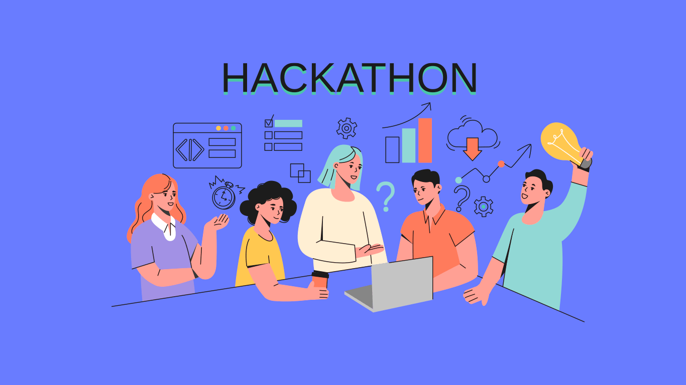
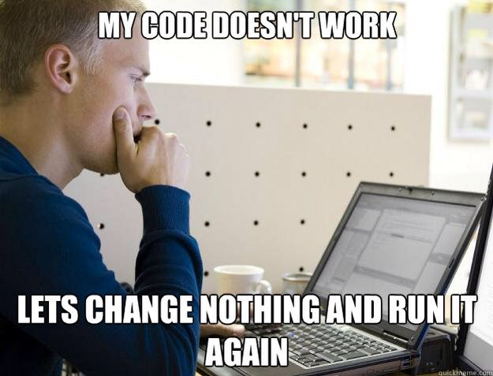

Hackathon e Projeto Final
Bem-vindos ao último dia do nosso minicurso! Hoje é o dia de colocar em prática tudo o que foi aprendido até aqui. O formato de hoje será um Hackathon, uma maratona de programação focada em construir um projeto completo do zero.

Planejamento Inicial
Todo bom software começa com um bom planejamento. Antes de escrever a primeira linha de código, precisamos saber exatamente o que vamos construir.
Apresentação do Escopo
A primeira etapa é decidir o que sua API vai fazer. Vocês têm total liberdade para escolher um tema que achem divertido ou útil. No entanto, se estiverem sem ideias, temos três opções clássicas e muito eficientes para treinar:
- Inventário de RPG: Uma API para gerenciar os itens de um personagem (nome do item, quantidade, tipo de dano, raridade).
- Gerenciador de Tarefas (To-Do List): Um sistema para anotar coisas a fazer, marcá-las como concluídas, definir prazos e prioridades.
- Cadastro de Alunos: Um sistema clássico de gestão escolar, registrando nome, matrícula, curso e notas dos alunos.
Modelagem Coletiva
Com o tema escolhido, é hora de desenhar a estrutura do projeto. Peguem um papel ou abram um bloco de notas e definam:
- As Rotas da API: Quais caminhos o usuário vai acessar? (Ex: GET /itens para listar tudo, POST /itens para criar, DELETE /itens/{id} para apagar).
- Os Atributos do Pydantic: Como será o formato dos dados recebidos e enviados? Se for um item de RPG, o modelo Pydantic precisa ter um campo nome (string), quantidade (inteiro) e magico (booleano). O Pydantic será nosso segurança, garantindo que ninguém cadastre um item com quantidade em texto no lugar de números.
Desenvolvimento e Mão na Massa
Agora vocês podem colocar a mão na massa!

Durante este período, cada grupo programará no seu próprio ritmo. Para que o projeto seja considerado concluído e validado, ele precisa cumprir os seguintes requisitos obrigatórios:
- CRUD Completo: A sua API precisa fazer as quatro operações básicas de banco de dados:
- Create (Criar - POST)
- Read (Ler - GET)
- Update (Atualizar - PUT ou PATCH)
- Delete (Apagar - DELETE)
- Leitura e Escrita em JSON: Os dados não podem sumir quando o servidor for reiniciado. Vocês deverão implementar a persistência salvando e lendo as informações de um arquivo .json local.
- Separação em Módulos: Um código profissional é um código organizado. Vocês não farão tudo em um arquivo só.
- main.py: Ficará responsável apenas pelas rotas (os endpoints) e pela configuração do FastAPI.
- db.py (ou similar): Ficará responsável apenas pela lógica de abrir o arquivo JSON, salvar os dados e buscar informações.
- Tratamento de Erros: A API não pode “quebrar” ou exibir telas assustadoras de erro interno (Erro 500) para o usuário. Vocês devem usar o HTTPException para retornar:
- Erro 404 (Not Found): Quando o usuário tentar buscar, atualizar ou deletar um item que não existe (um ID inválido).
- Erro 400 (Bad Request): Quando o usuário mandar uma informação inválida que não faça sentido para a regra de negócio.
Lembrete: Travou? Pesquise na documentação oficial, olhe os códigos dos dias anteriores, pergunte para o professor, pergunte para a IA!
Aviso: A IA generativa (gemini, claude) pode ser muito útil ao longo do desenvolvimento, mas lembre-se que seu objetivo aqui é aprender! Tente utilizar essas ferramentas para nortear seu desenvolvimento, não para receber a resposta pronta.
Code Review e Testes Integrados
Desenvolver é apenas metade do trabalho de um programador. A outra metade é garantir que o código funciona e interagir com o código de outras pessoas da equipe.
Compartilhando e Clonando o Repositório
- Subam o código: Façam os commits e enviem o projeto finalizado para o GitHub.
- Troca de Projetos: Compartilhem o link do repositório com um outro grupo. Cada grupo deverá acessar o repositório de um outro grupo e clonar o projeto para a sua própria máquina usando o comando git clone (ou baixando o repo).
Testando a API do Colega
Agora vocês atuarão como Engenheiros de Testes (QA - Quality Assurance).
- Suba o servidor do colega: Rode a aplicação que você acabou de clonar.
- Acesse o Swagger: Abra o /docs no navegador. A documentação interativa gerada pelo FastAPI estará lá.
- Missão - Tentar “Quebrar” a API: Seu objetivo é encontrar falhas.
- O que acontece se você enviar um texto onde deveria ser a idade?
- O que acontece se você tentar apagar um item passando um ID que não existe?
- A API retorna a mensagem de erro correta ou o servidor trava completamente?
Feedback construtivo: Anotem os bugs que encontrarem e repassem para os colegas de forma amigável para que eles possam corrigir!